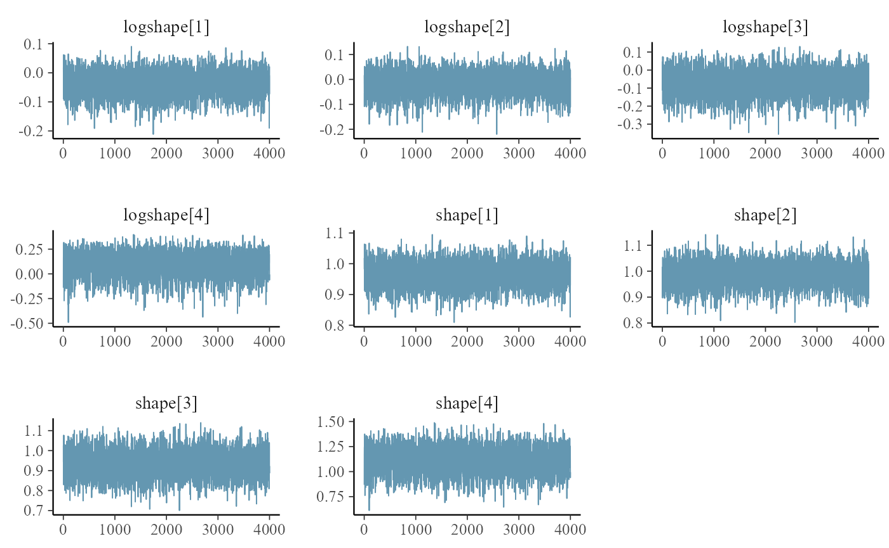
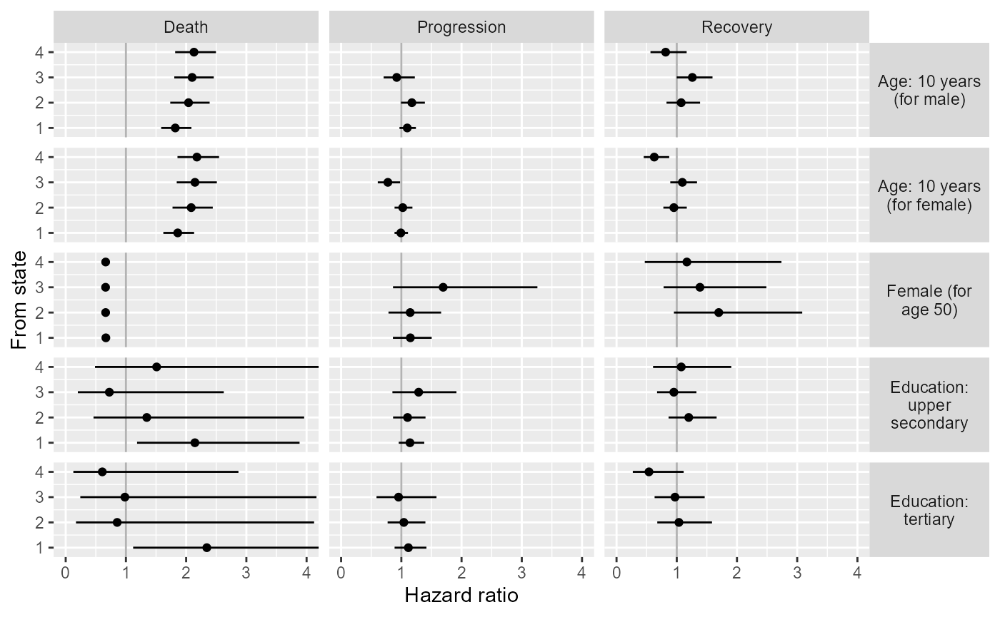
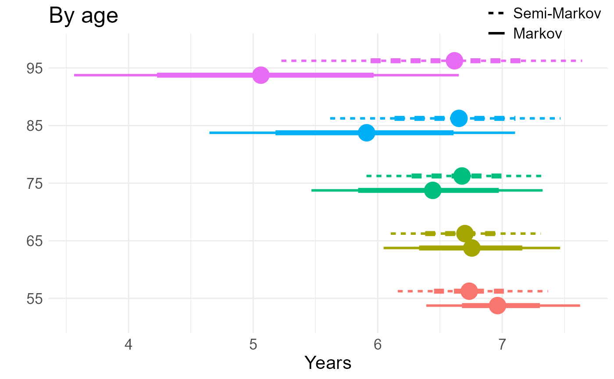
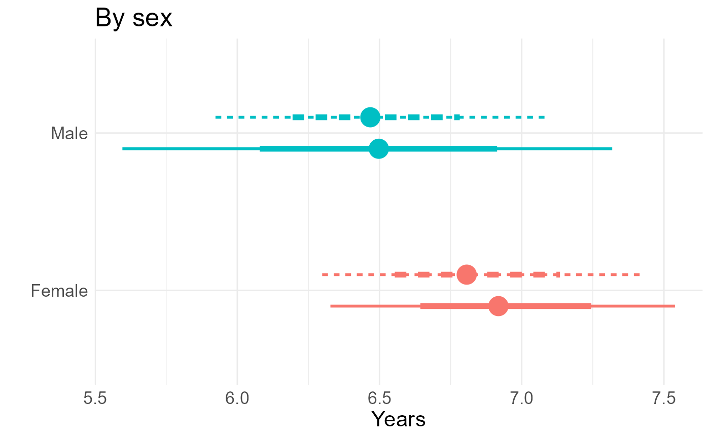
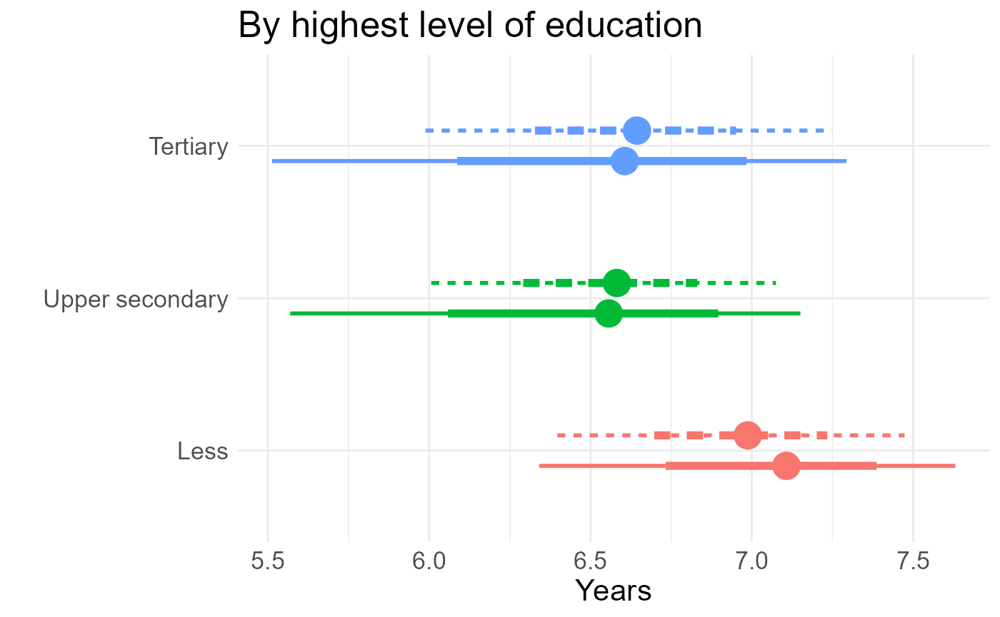
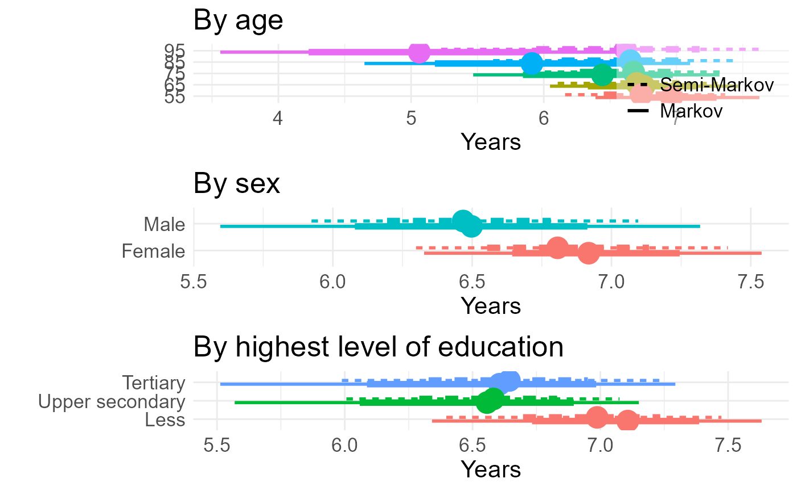

Code for using the msmbayes package for semi-Markov modelling in an application to cognitive function
Christopher Jackson
Source:vignettes/articles/cognitive.Rmd
cognitive.RmdThis file gives the code used for the analysis of the cognitive function data in Section 7 of the paper “Stable and practical semi-Markov modelling of intermittently-observed data” (Jackson).
It is intended to show that the methodology in the paper and the
msmbayes package can be easily used in practice. Though for
actually learning the package, it is better to start with other
documentation given on the package site, in
particular the Examples vignette and function references.
Since the original ELSA dataset cannot be redistributed, here we provide a simulated dataset with the same structure and size. The code used for the analysis is the same as in the paper, just with different data. Therefore the code can be run, but the results will be different.
library(msmbayes)
library(msm)
library(tidyverse)
library(gt)
library(posterior)
source("elsa_priors.R")
Q5 <- rbind(c(0, 1, 0, 0, 1),
c(1, 0, 1, 0, 1),
c(0, 1, 0, 1, 1),
c(0, 0, 1, 0, 1),
c(0, 0, 0, 0, 0))
save_files <- FALSE # for local use
if (save_files){
wd <- "../elsa/fakedata"
mbmodc <- readRDS(file=file.path(wd, "mbmodc.rds"))
mbmodscw <- readRDS(file=file.path(wd, "mbmodscg.rds"))
mbmodscg <- readRDS(file=file.path(wd, "mbmodscw.rds"))
}Simulated data
A simulated dataset is loaded here, which was produced by simulating state outcomes from a Markov model fitted to the original ELSA data. The same number of individuals and observation times are simulated as in the original data.
elsa1000 <- readRDS("elsa_fakedata.rds")Basic data summaries
Calculate the number of observed transitions over an interval between observations, by from-state and to-state. Overall and split by covariates. Note a small number of deaths from each state.
statetable(state="state", time="agey", subject="idauniq", data=elsa1000)
#> # A tibble: 4 × 7
#> fromstate timelag `1` `2` `3` `4` `5`
#> <dbl> <chr> <int> <int> <int> <int> <int>
#> 1 1 [0.000182005853254452,11] 953 680 238 39 61
#> 2 2 [0.000182005853254452,11] 190 558 342 37 20
#> 3 3 [0.000182005853254452,11] 48 220 445 108 10
#> 4 4 [0.000182005853254452,11] 4 17 64 135 7
statetable(state="state", time="agey", subject="idauniq",
covariates = "gender", data=elsa1000)
#> # A tibble: 8 × 8
#> fromstate timelag gender `1` `2` `3` `4` `5`
#> <dbl> <chr> <fct> <int> <int> <int> <int> <int>
#> 1 1 [0.000182005853254452,11] man 377 291 107 20 27
#> 2 1 [0.000182005853254452,11] woman 576 389 131 19 34
#> 3 2 [0.000182005853254452,11] man 73 258 167 11 8
#> 4 2 [0.000182005853254452,11] woman 117 300 175 26 12
#> 5 3 [0.000182005853254452,11] man 15 111 237 47 5
#> 6 3 [0.000182005853254452,11] woman 33 109 208 61 5
#> 7 4 [0.000182005853254452,11] man 4 6 29 50 3
#> 8 4 [0.000182005853254452,11] woman 0 11 35 85 4
statetable(state="state", time="agey", subject="idauniq",
covariates = "age10", data=elsa1000 |>
mutate(age10=cut(agey,c(0,60,70,80,110)))) |>
group_by(age10) |> summarise(n = sum(`5`)) # deaths by age group
#> # A tibble: 4 × 2
#> age10 n
#> <fct> <int>
#> 1 (0,60] 28
#> 2 (60,70] 40
#> 3 (70,80] 21
#> 4 (80,110] 9Markov models in msmbayes
Start with the simplest model with no covariates and default priors,
as a sense check. Looking at just the transition intensities
(q), and mean sojourn times (mst) the
estimates do not look extreme or uncertain, but this is misleading -
when converted to a time scale, the expected times to the death state 5
(without competing risks) are implausibly large and uncertain.
mbmod <- msmbayes(data=elsa1000, state="state", time="agey", subject="idauniq",
Q=Q5, deathexact=TRUE, fit_method="optimize")
summary(mbmod)
#> # A tibble: 14 × 7
#> name from to posterior mode prior_string prior
#> <chr> <int> <int> <rvar[1d]> <dbl> <chr> <rvar[1d]>
#> 1 q 1 2 0.4050 ± 0.0171 0.404 0.14 (0.0027, 6.8) 0.96 ± 4.4
#> 2 q 1 5 0.0185 ± 0.0030 0.0182 0.14 (0.0027, 6.8) 0.96 ± 4.4
#> 3 q 2 1 0.2018 ± 0.0154 0.201 0.14 (0.0027, 6.8) 0.96 ± 4.4
#> 4 q 2 3 0.3457 ± 0.0181 0.345 0.14 (0.0027, 6.8) 0.96 ± 4.4
#> 5 q 2 5 0.0074 ± 0.0029 0.00692 0.14 (0.0027, 6.8) 0.96 ± 4.4
#> 6 q 3 2 0.3226 ± 0.0232 0.321 0.14 (0.0027, 6.8) 0.96 ± 4.4
#> 7 q 3 4 0.1260 ± 0.0106 0.125 0.14 (0.0027, 6.8) 0.96 ± 4.4
#> 8 q 3 5 0.0059 ± 0.0029 0.00525 0.14 (0.0027, 6.8) 0.96 ± 4.4
#> 9 q 4 3 0.2667 ± 0.0311 0.265 0.14 (0.0027, 6.8) 0.96 ± 4.4
#> 10 q 4 5 0.0182 ± 0.0071 0.0171 0.14 (0.0027, 6.8) 0.96 ± 4.4
#> 11 mst 1 NA 2.3653 ± 0.0970 2.37 3.7 (0.073, 186) 26.11 ± 118.8
#> 12 mst 2 NA 1.8052 ± 0.0761 1.81 2.5 (0.049, 124) 17.41 ± 79.2
#> 13 mst 3 NA 2.2074 ± 0.1250 2.21 2.5 (0.049, 124) 17.41 ± 79.2
#> 14 mst 4 NA 3.5532 ± 0.3949 3.55 3.7 (0.073, 186) 26.11 ± 118.8
summary(mbmod, pars="time")
#> # A tibble: 10 × 7
#> name from to posterior mode prior_string prior
#> <chr> <int> <int> <rvar[1d]> <dbl> <chr> <rvar[1d]>
#> 1 time 1 2 2.5 ± 0.10 2.47 7.39 (0.1468, 371.9) 52 ± 238
#> 2 time 1 5 55.6 ± 8.87 54.8 7.39 (0.1468, 371.9) 52 ± 238
#> 3 time 2 1 5.0 ± 0.38 4.97 7.39 (0.1468, 371.9) 52 ± 238
#> 4 time 2 3 2.9 ± 0.15 2.90 7.39 (0.1468, 371.9) 52 ± 238
#> 5 time 2 5 155.0 ± 59.08 144. 7.39 (0.1468, 371.9) 52 ± 238
#> 6 time 3 2 3.1 ± 0.22 3.11 7.39 (0.1468, 371.9) 52 ± 238
#> 7 time 3 4 8.0 ± 0.67 7.97 7.39 (0.1468, 371.9) 52 ± 238
#> 8 time 3 5 213.3 ± 105.62 190. 7.39 (0.1468, 371.9) 52 ± 238
#> 9 time 4 3 3.8 ± 0.44 3.78 7.39 (0.1468, 371.9) 52 ± 238
#> 10 time 4 5 63.4 ± 25.13 58.5 7.39 (0.1468, 371.9) 52 ± 238Since there is very little information in this dataset about death,
we obtain strong priors on the death rates, and effect of age and sex on
these, from national mortality statistics. Other effects are given
weakly informative priors: a log-normal(0, 1) distribution supports
hazard ratios up to around exp(2) = 7, which we suppose
would be surprising in the context of demographic effects on the risk of
cognitive decline. The priors are stored in the file
elsa_priors.R, and code used to derive them is in
Supplementary Appendix 4 of the paper.
Now include the covariates in the model, still with a Markov model. These are age-sex interaction and level of education, modifying all transition rates differently.
set.seed(1)
mbmodc <- msmbayes(data=elsa1000, state="state", time="agey", subject="idauniq",
Q=Q5, deathexact=TRUE,
covariates = ~ gender*y5010 + raeducl,
priors = c(logq_priors, loghr_priors), # init = list(ini),
fit_method="optimize")
if (save_files) saveRDS(mbmodc, file=file.path(wd, "mbmodc.rds"))Standard maximum likelihood estimation in msm appears to
converge, even without any constraints on the parameters, but some
confidence intervals for hazard ratios are implausibly wide.
msmbayes allows use of informative priors to stabilise
computation and support weak data with background information.
msmmod <- msm(state ~ agey, subject=idauniq, data=elsa1000,
qmatrix=Q5, deathexact=TRUE, gen.inits=TRUE,
covariates = ~ gender*y5010 + raeducl,
control=list(fnscale=4000,maxit=10000))
hazard.msm(msmmod)
#> $genderwoman
#> HR L U
#> State 1 - State 2 0.9603818 7.090881e-01 1.300731e+00
#> State 1 - State 5 0.6490433 2.223327e-01 1.894715e+00
#> State 2 - State 1 1.2967242 6.669284e-01 2.521251e+00
#> State 2 - State 3 1.1585799 7.733754e-01 1.735648e+00
#> State 2 - State 5 2.8954462 1.504238e-01 5.573327e+01
#> State 3 - State 2 1.4126210 7.502159e-01 2.659898e+00
#> State 3 - State 4 1.6064021 7.470389e-01 3.454342e+00
#> State 3 - State 5 0.9840856 8.375991e-08 1.156191e+07
#> State 4 - State 3 1.0412543 3.585527e-01 3.023852e+00
#> State 4 - State 5 2.0375952 1.486375e-01 2.793235e+01
#>
#> $y5010
#> HR L U
#> State 1 - State 2 0.9919275 0.8704663 1.130337
#> State 1 - State 5 0.9523135 0.6099833 1.486764
#> State 2 - State 1 0.9481615 0.7189083 1.250521
#> State 2 - State 3 1.1828684 0.9962667 1.404421
#> State 2 - State 5 1.2446084 0.4689087 3.303522
#> State 3 - State 2 1.2617222 0.9840197 1.617796
#> State 3 - State 4 0.8786238 0.6470422 1.193090
#> State 3 - State 5 3.3322781 0.2204045 50.380452
#> State 4 - State 3 0.7419514 0.4914210 1.120204
#> State 4 - State 5 0.6435016 0.2044546 2.025361
#>
#> $raeducluppersec
#> HR L U
#> State 1 - State 2 1.0349711 0.85487983 1.253001
#> State 1 - State 5 1.3954669 0.65206990 2.986379
#> State 2 - State 1 1.0707526 0.76599105 1.496768
#> State 2 - State 3 1.1060680 0.86665113 1.411625
#> State 2 - State 5 5.4246401 0.01726260 1704.651578
#> State 3 - State 2 0.9513119 0.67022597 1.350282
#> State 3 - State 4 1.2107354 0.79214271 1.850525
#> State 3 - State 5 1.2663330 0.01028868 155.860486
#> State 4 - State 3 0.9649467 0.53140143 1.752201
#> State 4 - State 5 0.6182428 0.13738921 2.782053
#>
#> $raeducltertiary
#> HR L U
#> State 1 - State 2 0.997141002 7.811159e-01 1.2729100
#> State 1 - State 5 1.247979897 4.314819e-01 3.6095457
#> State 2 - State 1 0.885078025 5.649087e-01 1.3867076
#> State 2 - State 3 1.033308440 7.602864e-01 1.4043738
#> State 2 - State 5 6.590408548 1.625101e-02 2672.6630883
#> State 3 - State 2 0.968283667 6.268514e-01 1.4956867
#> State 3 - State 4 0.856040385 5.069047e-01 1.4456467
#> State 3 - State 5 4.206708439 6.924609e-02 255.5580385
#> State 4 - State 3 0.444456031 2.056360e-01 0.9606353
#> State 4 - State 5 0.009210946 1.001644e-06 84.7022825
#>
#> $`genderwoman:y5010`
#> HR L U
#> State 1 - State 2 0.9789217 0.824762202 1.161896
#> State 1 - State 5 1.2412095 0.674632911 2.283614
#> State 2 - State 1 1.0057234 0.713281660 1.418065
#> State 2 - State 3 0.8666753 0.693145917 1.083648
#> State 2 - State 5 0.5585449 0.081260720 3.839154
#> State 3 - State 2 0.8622604 0.633350876 1.173904
#> State 3 - State 4 0.8567347 0.584937871 1.254825
#> State 3 - State 5 0.8518272 0.005600282 129.566616
#> State 4 - State 3 0.8087406 0.481275351 1.359017
#> State 4 - State 5 0.5060219 0.103138691 2.482659Semi-Markov models in msmbayes
Gamma phase-type sojourn distribution, fitted using optimization to find the posterior mode, followed by Laplace approximation. This may take at least 20 minutes to run.
set.seed(1)
mbmodscg <- msmbayes(data=elsa1000, state="state", time="agey", subject="idauniq",
Q=Q5, deathexact=TRUE,
covariates = list(scale(1) ~ gender*y5010 + raeducl,
scale(2) ~ gender*y5010 + raeducl,
scale(3) ~ gender*y5010 + raeducl,
scale(4) ~ gender*y5010 + raeducl,
rrnext(1,5) ~ gender*y5010 + raeducl,
rrnext(2,3) ~ gender*y5010 + raeducl,
rrnext(2,5) ~ gender*y5010 + raeducl,
rrnext(3,4) ~ gender*y5010 + raeducl,
rrnext(3,5) ~ gender*y5010 + raeducl,
rrnext(4,5) ~ gender*y5010 + raeducl
),
pastates = c(1,2,3,4), panphase = c(5,5,5,5), pafamily="gamma",
priors = smm_priors("gamma"),
fit_method="optimize", verbose=TRUE
)
if (save_files) saveRDS(mbmodscg, file=file.path(wd, "mbmodscg.rds"))Weibull phase-type sojourn distribution.
set.seed(21)
mbmodscw <- msmbayes(data=elsa1000, state="state", time="agey", subject="idauniq",
Q=Q5, deathexact=TRUE,
covariates = list(scale(1) ~ gender*y5010 + raeducl,
scale(2) ~ gender*y5010 + raeducl,
scale(3) ~ gender*y5010 + raeducl,
scale(4) ~ gender*y5010 + raeducl,
rrnext(1,5) ~ gender*y5010 + raeducl,
rrnext(2,3) ~ gender*y5010 + raeducl,
rrnext(2,5) ~ gender*y5010 + raeducl,
rrnext(3,4) ~ gender*y5010 + raeducl,
rrnext(3,5) ~ gender*y5010 + raeducl,
rrnext(4,5) ~ gender*y5010 + raeducl
),
pastates = c(1,2,3,4), panphase = c(5,5,5,5), pafamily="weibull",
priors = smm_priors("weibull"),
fit_method="optimize", verbose=TRUE
)
if (save_files) saveRDS(mbmodscw, file=file.path(wd, "mbmodscw.rds"))
bayesplot::mcmc_trace(mbmodscw |> select(matches("shape")))
#> Warning: Dropping 'draws_df' class as required metadata was removed.
Likelihood-based model comparison
sprintf("The maximised log posterior is %s for the Markov model, %s for the Gamma semi-Markov model and %s for the Weibull semi-Markov model.",
round(loglik(mbmodc)$mode[3]),
round(loglik(mbmodscg)$mode[3]), round(loglik(mbmodscw)$mode[3]))
#> [1] "The maximised log posterior is -4941 for the Markov model, -4986 for the Gamma semi-Markov model and -4959 for the Weibull semi-Markov model."Table of basic parameter estimates
Sojourn times, next-state probabilities and shape parameters, here in LaTeX form to include in a paper.
trans_to_ttype <- function(from, to){
ifelse(to==5, "Death", ifelse(from < to, "Progression", "Recovery"))
}
pn_markov <- pnext(mbmodc) |> select(from, to, posterior) |>
mutate(ttype = trans_to_ttype(from, to)) |>
pivot_wider(id_cols=c("from"), values_from="posterior", names_from="ttype") |>
select(state=from, `Progression`,`Recovery`,`Death`) |>
mutate(mst = mean_sojourn(mbmodc)$posterior,
model = "Markov",
shape = posterior::rvar(NA)) |>
relocate(model, state, mst)
pn_semi <- pnext(mbmodscw) |> select(from, to, posterior) |>
mutate(ttype = trans_to_ttype(from, to)) |>
pivot_wider(id_cols=c("from"), values_from="posterior", names_from="ttype") |>
select(state=from, `Progression`,`Recovery`,`Death`) |>
mutate(mst = mean_sojourn(mbmodscw)$posterior,
model = "Semi-Markov",
shape = summary(mbmodscw, pars="shape")$posterior) |>
relocate(model, state, mst)
rvar_to_ci <- function(x){
summ <- summary(x, ~quantile(.x, c(0.025, 0.5, 0.975), na.rm=TRUE))
summf <- summ |>
mutate(across(all_of(c("50%","2.5%","97.5%")), ~format(round(.x,2),nsmall=2)))
ifelse(is.na(summ[["50%"]]), "",
sprintf("%s \\newline {\\footnotesize (%s, %s)}", summf[["50%"]], summf[["2.5%"]], summf[["97.5%"]])) |> latex()
}
tab <- rbind(pn_markov, pn_semi) |>
select(-model) |>
mutate(across(mst:shape, rvar_to_ci))
write.table(tab, sep=" & ", eol="\\\\\n", row.names = FALSE, quote=FALSE)
#> state & mst & Progression & Recovery & Death & shape\\
#> 1 & 3.04 \newline {\footnotesize (2.39, 3.87)} & 0.98 \newline {\footnotesize (0.97, 0.99)} & & 0.02 \newline {\footnotesize (0.01, 0.03)} & \\
#> 2 & 2.47 \newline {\footnotesize (1.84, 3.31)} & 0.66 \newline {\footnotesize (0.51, 0.78)} & 0.33 \newline {\footnotesize (0.21, 0.49)} & 0.00 \newline {\footnotesize (0.00, 0.01)} & \\
#> 3 & 2.99 \newline {\footnotesize (1.91, 4.54)} & 0.35 \newline {\footnotesize (0.19, 0.56)} & 0.64 \newline {\footnotesize (0.43, 0.81)} & 0.01 \newline {\footnotesize (0.00, 0.01)} & \\
#> 4 & 1.94 \newline {\footnotesize (0.76, 4.73)} & & 0.99 \newline {\footnotesize (0.98, 1.00)} & 0.01 \newline {\footnotesize (0.00, 0.02)} & \\
#> 1 & 2.46 \newline {\footnotesize (1.94, 3.22)} & 0.96 \newline {\footnotesize (0.91, 0.98)} & & 0.04 \newline {\footnotesize (0.02, 0.09)} & 0.96 \newline {\footnotesize (0.88, 1.04)}\\
#> 2 & 2.45 \newline {\footnotesize (1.80, 3.31)} & 0.59 \newline {\footnotesize (0.45, 0.73)} & 0.39 \newline {\footnotesize (0.26, 0.54)} & 0.01 \newline {\footnotesize (0.00, 0.04)} & 0.99 \newline {\footnotesize (0.89, 1.07)}\\
#> 3 & 3.52 \newline {\footnotesize (2.21, 5.57)} & 0.34 \newline {\footnotesize (0.19, 0.54)} & 0.63 \newline {\footnotesize (0.44, 0.79)} & 0.01 \newline {\footnotesize (0.00, 0.09)} & 0.94 \newline {\footnotesize (0.81, 1.06)}\\
#> 4 & 2.53 \newline {\footnotesize (1.19, 5.30)} & & 0.92 \newline {\footnotesize (0.63, 0.99)} & 0.08 \newline {\footnotesize (0.01, 0.37)} & 1.12 \newline {\footnotesize (0.84, 1.34)}\\Covariate effects
Form a tidy data frame with estimates and CIs to be plotted.
For the Markov model these are hazard ratios, and for the semi-Markov model these are time acceleration factors and relative risks of a particular next state.
hrs <- summary(mbmodc, pars="hr") |>
mutate(ttype = trans_to_ttype(from, to),
model = "Markov") |>
select(model, from, name, ttype, posterior, prior=prior)
tafs <- summary(mbmodscw, pars="taf") |>
mutate(model="Semi-Markov", ttype = "Sojourn") |>
select(model, from, name, ttype, posterior, prior)
trans_to_ttype_rr <- function(from, to){
ttype <- ifelse(to==5, "Death", ifelse(from < to, "Progression", "Recovery"))
base <- ifelse(from == 1, "Progression", "Recovery")
sprintf("%s/%s",ttype,base)
}
rrnexts <- summary(mbmodscw,pars = "rrnext") |>
mutate(ttype = trans_to_ttype_rr(from, to),
model = "Semi-Markov") |>
select(model, from, name, ttype, posterior, prior=prior)
cov_codes <- c("Female (for age 50)"="genderwoman",
"Age: 10 years (for female)"="ageeff_woman",
"Education: tertiary"="raeducltertiary",
"Education: upper secondary"="raeducluppersec",
"Age: 10 years (for male)"="y5010")
covres <- rbind(hrs, tafs, rrnexts) |>
rename(Posterior=posterior, Prior=prior) |>
pivot_longer(c("Posterior", "Prior"), names_to="dist", values_to="value") |>
mutate(name = gsub(".+\\((.+)\\)","\\1", name))
inter <- covres |> filter(name=="genderwoman:y5010") |> select(-name) |>
left_join(covres |> filter(name=="y5010") |> rename(ageeff=value) |> select(-name),
by = join_by(model, from, ttype, dist)) |>
mutate(value = value * ageeff,
name = "ageeff_woman") |>
select(model, from, name, ttype, dist, value)
covres <- covres |>
filter(name != "genderwoman:y5010") |>
rbind(inter) |>
mutate(value = summary(value, ~quantile(.x, c(0.025, 0.5, 0.975)))) |>
mutate(lower = value$`2.5%`, median = value$`50%`, upper = value$`97.5%`) |>
select(model, from, name, ttype, dist, lower, median, upper) |>
mutate(name = fct_relevel(name, "y5010", "ageeff_woman",
"genderwoman","raeducluppersec",
"raeducltertiary"),
name = fct_recode(name, !!!cov_codes))Plot for Markov and semi-Markov separately.
p <- ggplot(covres |> filter(model=="Markov", dist=="Posterior"),
aes(y=median, x=from)) +
coord_flip(ylim=c(0,4)) +
facet_grid(rows=vars(name), cols=vars(ttype),
labeller = label_wrap_gen(width=15)) +
geom_hline(yintercept=1, col="gray70") +
geom_point(position=position_dodge(width=0.4)) +
geom_linerange(aes(ymin=lower, ymax=upper),
position=position_dodge(width=0.4),
show.legend = FALSE) +
theme(strip.text.y = element_text(angle = 0)) +
ylab("Hazard ratio") + xlab("From state")
p 
p <- ggplot(covres |> filter(model=="Semi-Markov", dist=="Posterior") |>
mutate(ttype = fct_relevel(ttype, "Sojourn", "Death/Progression")),
aes(y=median, x=from, lty=dist, col=dist)) +
coord_flip(ylim=c(0,5)) +
facet_grid(rows=vars(name), cols=vars(ttype), scales="free_y",
labeller = label_wrap_gen(width=15)) +
geom_hline(yintercept=1, col="gray70") +
geom_point(position=position_dodge(width=0.4)) +
geom_linerange(aes(ymin=lower, ymax=upper),
position=position_dodge(width=0.4),
show.legend = FALSE) +
scale_color_manual(breaks=c("Posterior","Prior"),values=c("black","blue")) +
guides(col = guide_legend(position = "inside", title="")) +
theme(legend.position.inside = c(1, 0),
legend.justification = c(1, 0),
legend.background = element_rect(fill=alpha('white', 0.4)),
strip.text.y = element_text(angle = 0)
) +
xlab("From state") + ylab("Multiplicative effect")
if (save_files){
pdf("../paper/figures/elsa_smm.pdf",width=5,height=4)
p
dev.off()
}Standardised outputs: total time spent in states
source("stdpop.R")
tls_educ <- lapply(nd_educ, function(x){
totlos(mbmodscg, t=10, new_data=standardise_to(x))
})
tlm_educ <- lapply(nd_educ, function(x){
totlos(mbmodc, t=10, new_data=standardise_to(x))
})
elevs <- c("less","uppersec","tertiary")
tles <- do.call("rbind",tls_educ) |>
mutate(educ = rep(factor(elevs,levels=elevs),each=5),
state = factor(state),) |>
filter(state %in% 1:2) |>
group_by(educ) |>
summarise(posterior = rvar_sum(posterior)) |>
mutate(model = "semi-Markov",
tdiff = posterior - posterior[1])
tlem <- do.call("rbind",tlm_educ) |>
mutate(educ = rep(factor(elevs, levels=elevs),each=5),
state = factor(state)) |>
filter(state %in% 1:2) |>
group_by(educ) |>
summarise(posterior = rvar_sum(posterior)) |>
mutate(model = "Markov",
tdiff = posterior - posterior[1])
tle <- rbind(tles, tlem)
if (save_files) saveRDS(tle, file=file.path(wd, "tle.rds"))By age, averaging over gender and education.. Age in the model is continuous, but for standardisation we need to group the population, so we obtain model outputs for the age group midpoints: 55, 65, 75, 85, 95 and assume these are homogeneous within age groups.
Note time dependent covariate, which is why we forecast over a short prediction interval, 10 years.
tls_age <- lapply(nd_age, function(x){
totlos(mbmodscg, t=10, new_data=standardise_to(x))
})
tlm_age <- lapply(nd_age, function(x){
totlos(mbmodc, t=10, new_data=standardise_to(x))
})
alevs <- c("50-60","60-70","70-80","80-90","90-100")
tles <- do.call("rbind",tls_age) |>
mutate(age = rep(factor(alevs,levels=alevs),each=5),
state = factor(state),) |>
filter(state %in% 1:2) |>
group_by(age) |>
summarise(posterior = rvar_sum(posterior)) |>
mutate(model = "semi-Markov",
tdiff = posterior - posterior[1])
tlem <- do.call("rbind",tlm_age) |>
mutate(age = rep(factor(alevs, levels=alevs),each=5),
state = factor(state)) |>
filter(state %in% 1:2) |>
group_by(age) |>
summarise(posterior = rvar_sum(posterior)) |>
mutate(model = "Markov",
tdiff=posterior - posterior[1])
tla <- rbind(tles, tlem)
if (save_files) saveRDS(tla, file=file.path(wd, "tla.rds"))By gender
tls_gender <- lapply(nd_gender, function(x){
totlos(mbmodscw, t=10, new_data=standardise_to(x))
})
tlm_gender <- lapply(nd_gender, function(x){
totlos(mbmodc, t=10, new_data=standardise_to(x))
})
alevs <- sapply(nd_gender, function(x)x$gender[1])
tles <- do.call("rbind",tls_gender) |>
mutate(gender = rep(factor(alevs,levels=alevs),each=5),
state = factor(state)) |>
filter(state %in% 1:2) |>
group_by(gender) |>
summarise(posterior = rvar_sum(posterior)) |>
mutate(model = "semi-Markov",
tdiff=posterior - posterior[1])
tlem <- do.call("rbind",tlm_gender) |>
mutate(gender = rep(factor(alevs, levels=alevs),each=5),
state = factor(state)) |>
filter(state %in% 1:2) |>
group_by(gender) |>
summarise(posterior = rvar_sum(posterior)) |>
mutate(model = "Markov",
tdiff=posterior - posterior[1])
tlg <- rbind(tles, tlem)
if (save_files) saveRDS(tlg, file=file.path(wd, "tlg.rds"))
tlg
#> # A tibble: 4 × 4
#> gender posterior model tdiff
#> <fct> <rvar[1d]> <chr> <rvar[1d]>
#> 1 woman 6.8 ± 0.29 semi-Markov 0.00 ± 0.00
#> 2 man 6.5 ± 0.30 semi-Markov -0.35 ± 0.29
#> 3 woman 6.9 ± 0.31 Markov 0.00 ± 0.00
#> 4 man 6.5 ± 0.44 Markov -0.44 ± 0.30Results for all comparisons in a three panel figure
tla <- tla |>
mutate(cov="Age",
age = fct_recode(age, "55"="50-60", "65"="60-70",
"75"="70-80", "85"="80-90","95"="90-100"),
model=fct_recode(model, "Semi-Markov"="semi-Markov"))
tlg <- tlg |>
mutate(cov="Sex",
model=fct_recode(model, "Semi-Markov"="semi-Markov"),
gender = fct_recode(gender, "Male"="man", "Female"="woman"))
tle <- tle |>
mutate(cov="Education",
model=fct_recode(model, "Semi-Markov"="semi-Markov"),
educ = fct_recode(educ, "Less"="less",
"Upper secondary"="uppersec", "Tertiary"="tertiary"))
# psize <- 24 # for interactive use, for paper
psize <- 16 # for automated use, for website
ga <- tla |>
ggplot(aes(y=age, col=age, lty=model, xdist=posterior)) +
ggdist::stat_pointinterval(position=ggstance::position_dodgev(height=0.5),
interval_size_range = c(1,2), fatten_point=3) +
guides(color="none",
lty = guide_legend(position="inside", title="", reverse=TRUE)) +
theme_minimal() +
theme(legend.position.inside = c(1, 1.2),
legend.justification = c(1, 1),
legend.background = element_rect(fill=alpha('white', 0.4),
color=0),
text = element_text(size=psize)
) + xlab("Years") + ylab("") + ggtitle("By age")
ga
gg <- tlg |>
ggplot(aes(y=gender, col=gender, lty=model, xdist=posterior)) +
ggdist::stat_pointinterval(position=ggstance::position_dodgev(height=0.4),
interval_size_range = c(1, 2), fatten_point=3) +
guides(color="none", lty="none") +
theme_minimal() +
theme(text = element_text(size=psize)) +
xlab("Years") + ylab("") + ggtitle("By sex")
gg
ge <- tle |>
ggplot(aes(y=educ, col=educ, lty=model, xdist=posterior)) +
ggdist::stat_pointinterval(position=ggstance::position_dodgev(height=0.4),
interval_size_range = c(1, 2), fatten_point=3) +
guides(color="none", lty="none") +
theme_minimal() +
theme(text = element_text(size=psize)) +
xlab("Years") + ylab("") + ggtitle("By highest level of education")
ge
p <- cowplot::plot_grid(ga, gg, ge, align="v", ncol=1)
p 